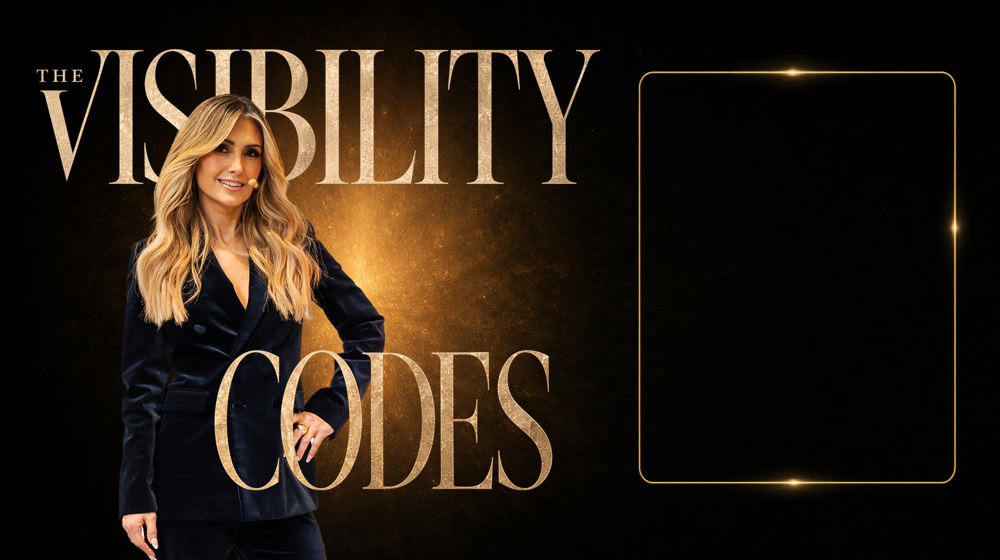
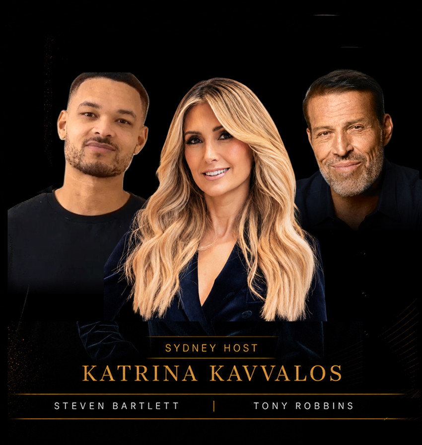
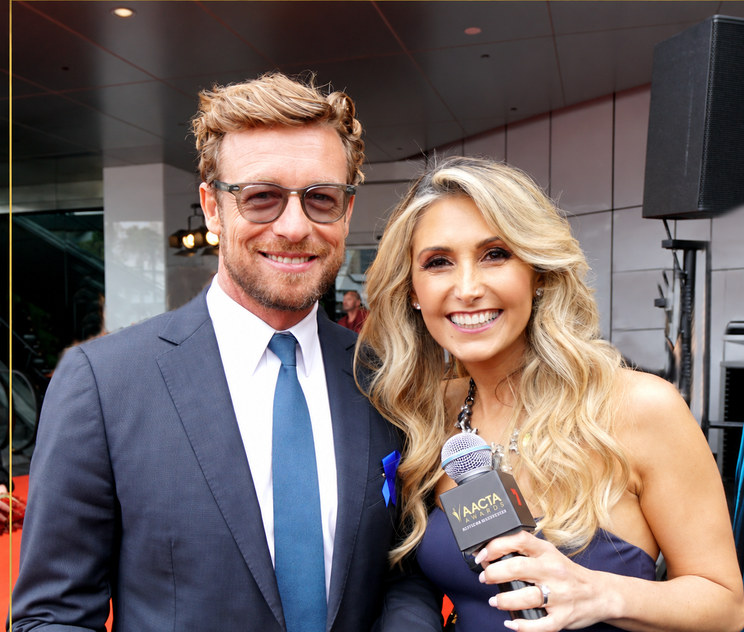
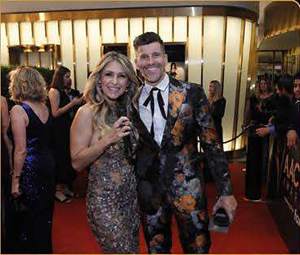
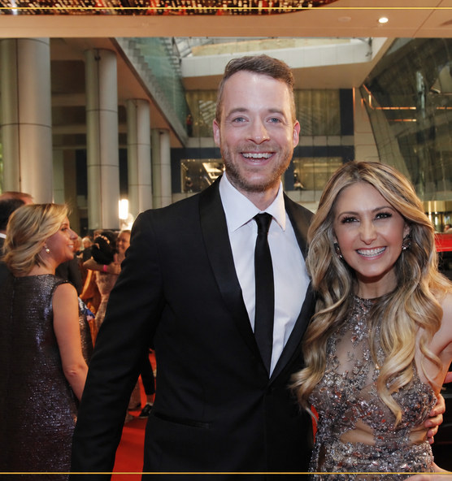
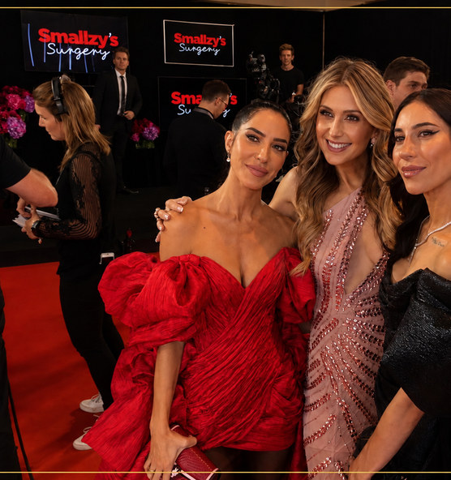
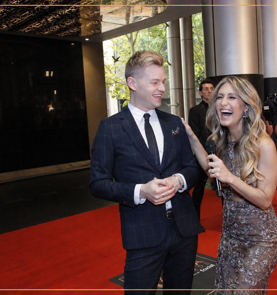
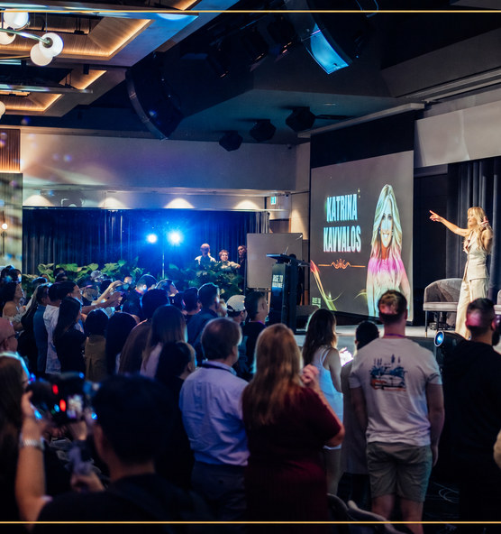

In just 3 minutes, discover what is stopping you from standing out, being seen and being chosen, and what to shift next.
Stand out. Be seen. Be chosen.
Start QuizThe first step to improving your visibility is knowing exactly where your gap is. Take this 3-minute Visibility Assessment to uncover what may be keeping you from standing out, being seen, and being chosen for the opportunities you want.
You’ll receive your score, primary blocker, strongest area, and next steps to help you move forward with clarity.
Get Your Free ScoreScore. Gap. Next Steps.
Why The Visibility Codes Work
I have been chosen for opportunities, stages and rooms I was not the most qualified for on paper. Not because I was better than everyone else, but because I learned how to position myself to be seen, remembered and chosen.
At the same time, I have seen incredibly talented, experienced and qualified people stay overlooked simply because they were not visible in the right way.
You can have the experience, the talent and the expertise, and still be missed. Visibility changes when you learn how to position yourself so the right people notice you, remember you and choose you, even before you feel like the obvious choice.
600,000+
followers on Instagram
Built through visibility, positioning and content that gets remembered.
Almost 1 million
across social media
A personal brand grown through strategic positioning and visibility.
Chosen for major
media and red carpets
Including interviewing global celebrities and entertainment leaders.
Chosen to host in front of
12,000 people
Alongside world class speakers such as Tony Robbins, Steven Bartlett, Gary Brecka and more.
The Visibility Codes are built from the same strategies I have used in real life to create recognition, credibility, proximity and opportunity.

In just 3 minutes, uncover the hidden gap affecting your visibility, identify where you are strongest, and receive a personalised next-step plan.
Your message, positioning, or focus is unclear, making it harder for people to understand what you do and why it matters.
You have value to offer, but the right people are not noticing, remembering, or choosing you yet.
You show up in pockets, but not often enough to build trust, momentum, and authority.
Your content or presence is not fully creating resonance, trust, or the relationships that open doors.
You are visible in some ways, but not yet positioned for the rooms, referrals, and aligned opportunities you want.
Katrina Kavvalos is a TV show creator, producer, speaker, media personality, red carpet host, celebrity interviewer, and #1 bestselling author whose career spans broadcast television, publishing, and digital media.
As a Red Carpet Host and Celebrity Interviewer at the AACTA Awards, Katrina has interviewed some of the most recognisable names in entertainment, and also served as VIP Social Media Reporter for The Voice Australia and singer Will.i.am.
With more than a decade of experience across media and digital platforms, Katrina has built a respected reputation across both broadcast and social, while contributing to bestselling books on credibility, relationships, and personal influence in the digital age.
Across television, publishing, and visibility-focused media projects, Katrina’s work explores identity, reinvention, success, and human potential, helping people step out of the background, elevate their authority, and become impossible to overlook.






Discover what is currently holding back your visibility,
and the exact area to focus on next.
Enter your details below to get your personalised Visibility Score and instant insights.
We’ll send it straight to your inbox.